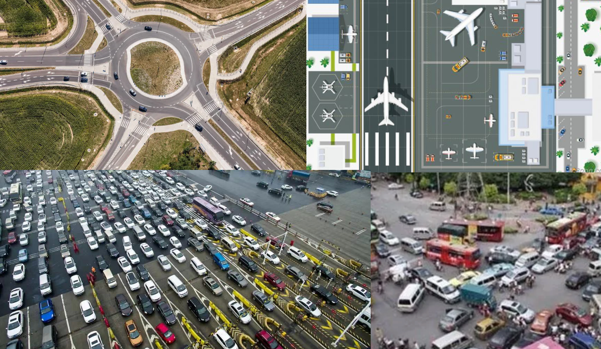
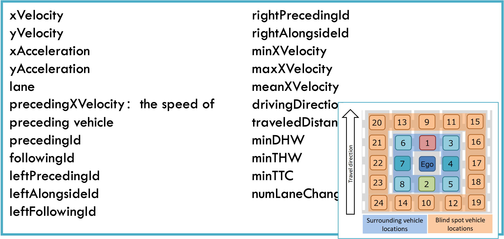
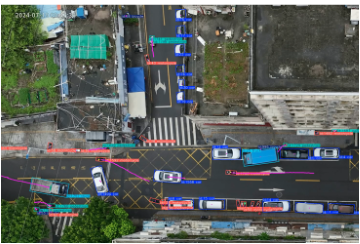
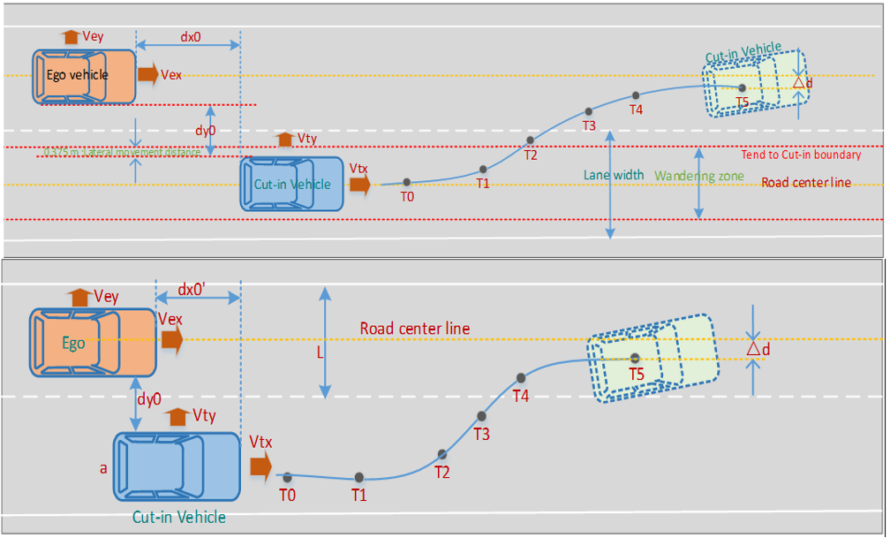
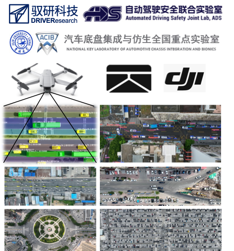

Scenario Data-Driven
Automated Driving Safety
场景数据驱动智能交通与自动驾驶安全
The world's largest aerial naturalistic driving dataset — enabling scenario-based validation for safer automated vehicles.
场景数据驱动智能交通与自动驾驶安全
The world's largest aerial naturalistic driving dataset — enabling scenario-based validation for safer automated vehicles.
One of the world's largest aerial naturalistic driving datasets, capturing real-world traffic interactions from a bird's-eye perspective.
Bird's-eye view trajectory data with comprehensive kinematic parameters, enabling scenario extraction aligned with ISO 34502.


Three evaluation paradigms powered by naturalistic driving data.


合规性安全测评
Provide naturalistic driving baselines to fill the quantitative gaps in current standards. Reference parameters (P5–P95 percentiles) for regulation-aligned testing.
拟人化测评
P25–P75 mainstream driving behavior as the human baseline. Benchmark automated vehicle behavior against real human drivers for comfort and efficiency.
事故数据风险测评
Naturalistic data as the "denominator" + accident data as the "numerator" — computing real-world exposure rates for scenario-based risk assessment.

DRIVEResearch (驭研科技) is a data-driven company focused on automated driving safety, founded by researchers from Jilin University's Automated Driving Safety Joint Lab.
We specialize in aerial naturalistic driving data collection and scenario-based safety analysis, with deep expertise in SOTIF (ISO 21448) and functional safety (ISO 26262).
Jilin University — College of Automotive Engineering
Automated Driving Safety Joint Lab
ZHUOYU Technology (卓驭科技, formerly DJI Automotive)
Functional safety collaboration
fka / leveLXData (Aachen, Germany)
Global data sharing partnership
Interested in our data or solutions? Let's talk.
中国长春·净月高新区·数字科技孵化基地9A-2
9A-2, Digital Technology Incubation Base, Jingyue High-tech Zone, Changchun, China